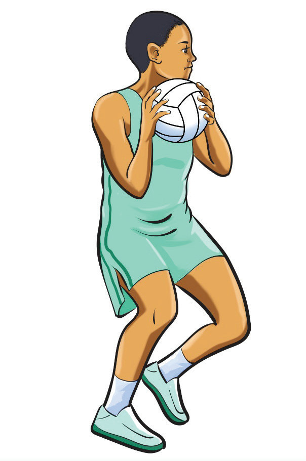

Two-handed catch
This is the safest and most commonly used catching technique. A player uses both hands to catch the ball, ensuring a firmer grip and better control. A two-handed catch is often employed when the ball is coming at a high speed or rebounds. Players extend their arms toward the ball, spreading their fingers wide, and absorb the impact by pulling the ball toward their chest. This method provides better control, reduces the risk of fumbling, and ensures accuracy when transitioning to a pass or shot. To practice the two-handed catch, follow these steps:
- (i) Keep the body well-balanced and focus your eyes on the ball to track its flight and anticipate its path;
- (ii) Extend your arms toward the ball, spreading your fingers to form a shape that mirrors the spherical form of the ball;
- (iii) Catch the ball firmly by bringing your palms and fingers together, ensuring a secure grip; and
- (iv) Pull the ball back towards your chest after catching it to maintain control and prepare for the next move as shown in Figure 1.10.

One-handed catch
This technique is used when the ball is out of reach, such as during a high pass or a deflection. It requires quick reflexes, strong hand-eye coordination, and grip strength to control the ball before securing it with both hands. While riskier than a two-handed catch, it is useful in fast-paced situations where a player needs to react quickly. To practice the one-handed catch, follow these steps:
- (i) Keep the body well-balanced and focus your eyes on the ball to track its flight path;